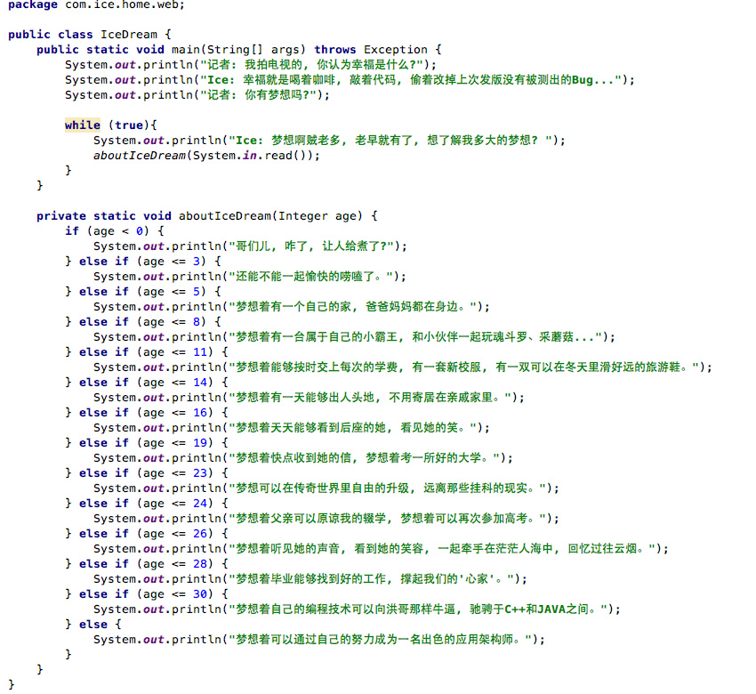

关于我

- 姓名: 张盼
- 所在城市: 北京
- 毕业学校: 洛阳师范学院
- Email: zhangpan@weilx.com
梦想篇
简历
工作经历
-
2015-至今
北京恒安嘉新（北京）科技有限公司
数据部 数据开发工程师离线的方式收集移动和联通的结构化、半结构化、非结构化数据，利用Hadoop对数据进行分类统计，对统计后的数据可视化展现，更好满足各业务线的需求。
-
2008-2011
项目经验
-
2015-至今
-
2013-2015